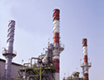
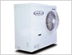

에너지가 필요한 모든 곳에 천연가스가 있습니다.
천연가스는 국내의 에너지 소비 중 10% 수준을 차지하고 있는 에너지로서 전국적으로 도시가스 배관망을 통해 공급되며 가정용, 산업용 및 발전용 들 이용분야가 다양 합니다.
산업용은 여러가지 공정에 이용되며 생산성 향상,공해 방지, 품질향상, 작업환경 개선 등에 공헌하고 있습니다.
산업용은 여러가지 공정에 이용되며 생산성 향상,공해 방지, 품질향상, 작업환경 개선 등에 공헌하고 있습니다.
| 가정용 | 산업용 | 발전용 |
|---|---|---|
| 냉난방 | 보일러 | LNG 복합화력 |
| 급탕 | *요업/철강 | 지역난방 |
| 취사 | 냉난방 | 열병합 |
| 건조 | 수송 | 연료전지 |
| 냉열이용 | ||
| * C1 화학 |
※ 요업/철강:가열 및 열처리
※ C1화학:천연가스의 주성분인 메탄(CH4)을 원료로 하여 고부가물질 (DME, 메탄올, 수소 등)을 만드는 기술
※ C1화학:천연가스의 주성분인 메탄(CH4)을 원료로 하여 고부가물질 (DME, 메탄올, 수소 등)을 만드는 기술
천연가스 공급 사업체계
단계1_해외 원산지 공정
 1차에너지(가스,석유 등)로 원동기
(가스터빈,가스엔진 등)를 이용하
여 전기를 생산하고, 이 때 발생
되는 폐열을 회수하여 유효열로
사용하는 시스템입니다.
그러므로 종래의 발전방식보다 배 이상의 효과를 거둘 수 있는 경제적인 발전방식입니다.
그러므로 종래의 발전방식보다 배 이상의 효과를 거둘 수 있는 경제적인 발전방식입니다.
 냉·난방 겸용방식으로 초기투자비 및 운전 비용절감 측면에서 유리합니다. 작은 설치면적, 취급용이 및 자격 소지자 불필요 등 정부시책에 부합됩니다.
청정연료 사용으로 환경보호 및 에너지 수급안정기여로 최근 수요가 급증하는 추세이고 대부분의 신축빌딩은 가스냉방을 채택 중이며, 소형으로도 개발되어 가정에서도 설치할 수 있습니다.
청정연료 사용으로 환경보호 및 에너지 수급안정기여로 최근 수요가 급증하는 추세이고 대부분의 신축빌딩은 가스냉방을 채택 중이며, 소형으로도 개발되어 가정에서도 설치할 수 있습니다.
냉열이용산업
천연가스의 액화과정에서 생긴 냉열을 재활용하는 산업으로, 차가운 LNG는 1kg당 약200kcal (증발잠열120k cal/kg, 현열: 80kcal/kg)의 냉열을 갖고 있어서 관련 산업에 이용할 수 있습니다.
LNG의 저온성(-162 °C)을 이용하여
- 공기 액화 분리 사업 : 액체 산소, 질소, 아르곤을 생산합니다.
- 냉동창고 : LNG의 냉열을 직접, 간접으로 이용하여 식품사업에 적용합니다.
- 냉열발전 : LNG를 기화할 때 발생된 팽창 에너지를 회수하여 발전하는 방식입니다.
- 저온분쇄 : 폐타이어 등의 폐기물을 저온 분쇄하여 재활용하는 사업입니다.
- 그외 인공 스케이트장, 스키장, 지역냉방 등에 값싼 냉열을 효과적으로 이용하기 위해 연구, 개발중입니다.